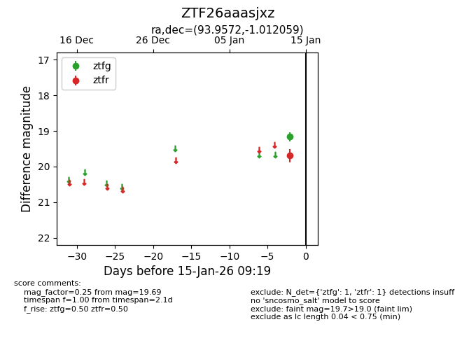
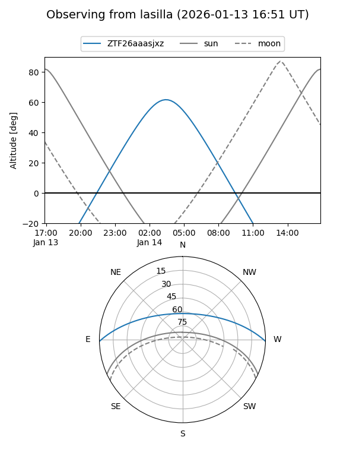
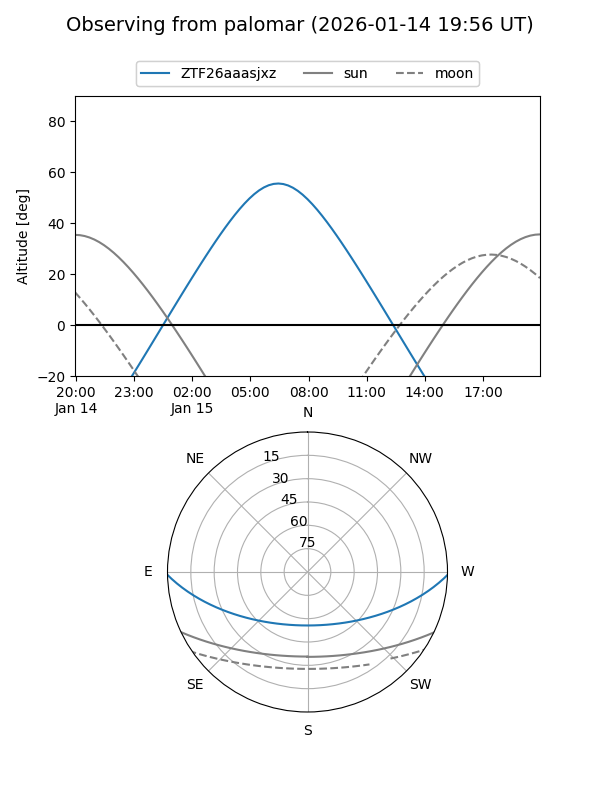

ZTF26aaasjxz
Target ZTF26aaasjxz at 2026-01-15 09:20
Aliases and brokers:
FINK: link
Lasair: link
ALeRCE: link
alt names
ZTF26aaasjxz (ztf,fink_ztf)
Coordinates:
equatorial (ra, dec) = 93.9572,-1.01206
equatorial (HMS+DMS) = 06:15:49.73,-01:00:43.41
galactic (l, b) = (209.7547,-8.38115)
Flags:
Photometry:
last ztfg=19.16, ztfr=19.69
1 ztfg, 1 ztfr detections
Lightcurve

Visibility


Additional plots